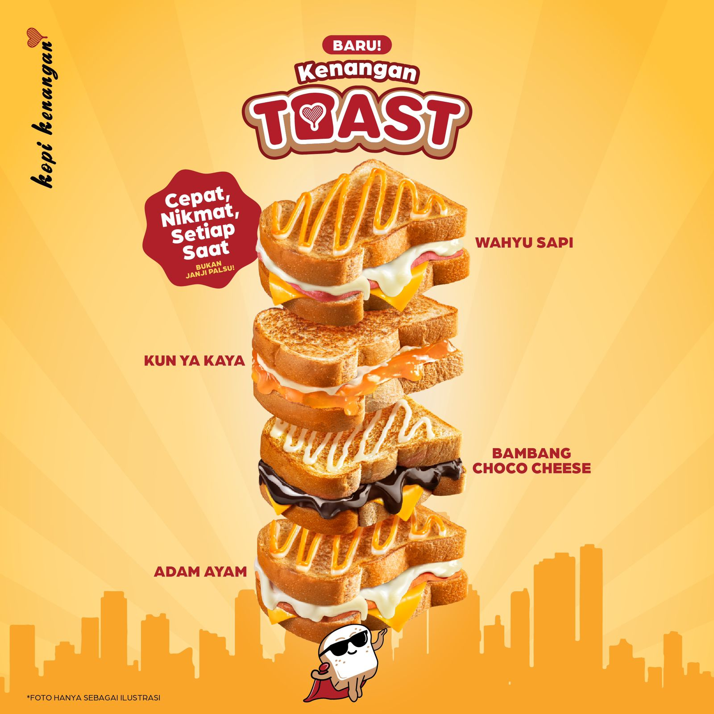
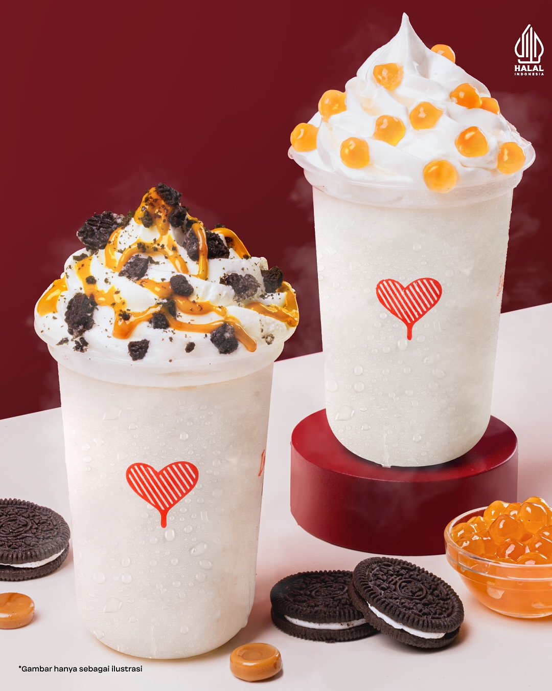
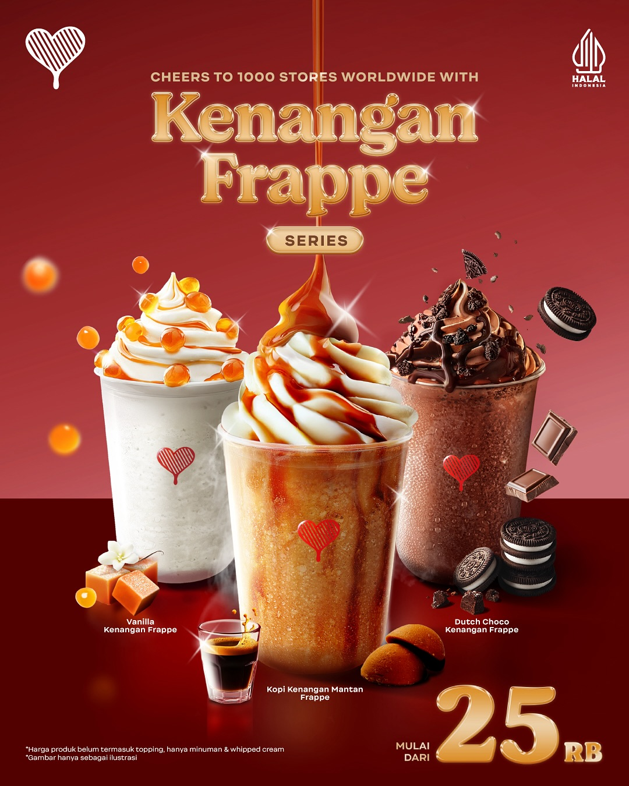

✦✦✧

kopi kenangan dapat membuat kenangan mu kembali .
Kopi kenangan mantan & .
✦ tentang kopi kenangankopi • kenangan • mantan

kopi kenangan dapat membuat kenangan mu kembali .
Kopi kenangan mantan & .
✦ tentang kopi kenangan
kopi kenangan secara umum mendapat kan rating yang solid di angka 3,9 hingga 4,5 dari 5 bintang di berbagai platform.
rating
— kopi kenangan indonesia

1 botania 2 2.k square 3 sekupang 4 mega mall 5.palm spring 6.ruko tiban 7.batam city square
lokasi✉
apa yang ingin kamu kata kan dan beri masukan kepada kopi kenangan
kirim →